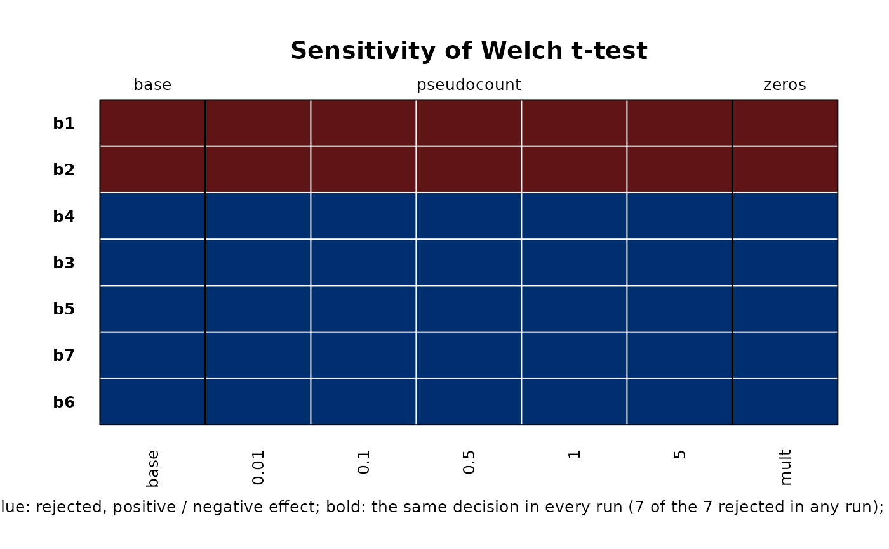
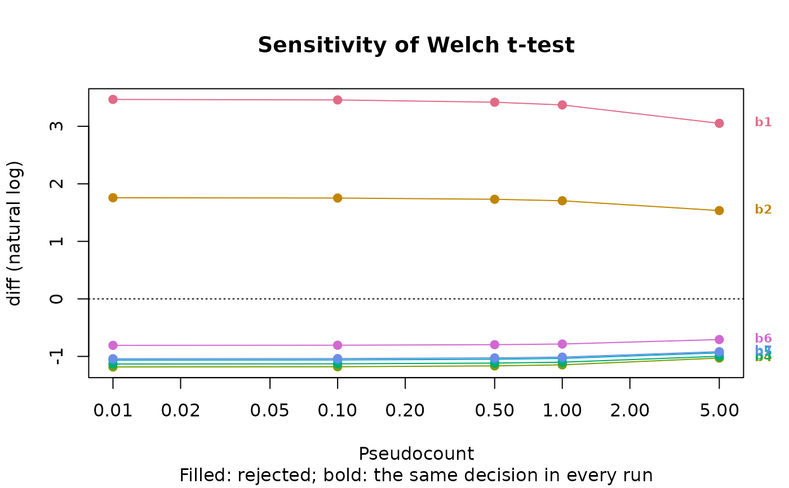

Plot a Differential Abundance Sensitivity Analysis
Source:R/da_sensitivity.r
plot.ecodive_da_sensitivity.RdTwo displays of a da_sensitivity() result: which features each run
rejects ("tiles"), and how each feature's effect changes with one
setting ("traces").
Arguments
- x
A
da_sensitivity()result.- type
"tiles"(the default) or"traces".- covariate
For the model methods, which covariate to show: one of
x$covariate. Default: the covariate of the term of interest (attr(x, "covariate")).- parameter
Which runs to show. For
"tiles", the base run and the runs of oneparameter("pseudocount","zeros","scale_sd"or"crossed"); default: every run. For"traces", the setting to draw the effects against ("pseudocount","zeros"or"scale_sd"); default: the first numeric one varied. Withcrossed = TRUE, the traces hold the other setting at its first value, as the subtitle says.- n_features
The most features to show. Default:
30.- ...
Further graphical parameters for
graphics::image()("tiles") orgraphics::plot()("traces"), such asmain.
Details
Tiles. A row per feature (those rejected in at least one run: the
most often rejected first, then by the size of their effect in the base
run), a column per run (the base run first, then the runs of each
setting, separated by vertical lines, with the setting named above).
A cell is red when the run rejects the feature with a positive effect,
blue with a negative one, dark grey when the method gives no effect
(ANCOM), light grey when the run doesn't reject it, and white when the
run has no result for it. A feature's name is bold when every run makes
the same decision (summary$passed).
Traces. For one setting, a line per feature (those rejected in the
base run, else in any run, the largest effects first) through its effect
at each of the setting's values, with filled points where the run
rejects it and hollow ones where it doesn't, and a dotted line at 0.
Names are bold as in the tiles. Against scale_sd, this is the display of
ALDEx2's plotGamma(). ANCOM has no effects to draw.
Examples
x <- rbind(
c( 20, 110, 100, 101, 100, 103, 104),
c( 33, 110, 120, 100, 101, 100, 102),
c( 12, 110, 100, 110, 100, 50, 90),
c(202, 201, 9, 10, 10, 11, 11),
c(200, 202, 10, 10, 13, 10, 10),
c(203, 201, 14, 10, 10, 13, 12) )
colnames(x) <- paste0('b', 1:7)
grp <- rep(c('treatment', 'placebo'), each = 3)
res <- da_sensitivity(
x, 'da_ttest', grp, pseudocounts = c(0.01, 0.1, 0.5, 1, 5),
zeros = TRUE, cpus = 1 )
plot(res)

plot(res, 'traces')
